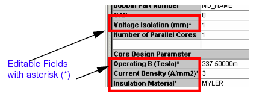

|
|
|||||||||
|
|
|
|
|
|
|
|
|
|
|
This chapter details the output generated by the Magnetic Parts Editor at the completion of the design process. When you design a magnetic component using Magnetic Parts Editor, two types of outputs are generated, the PSpice model for the newly designed transformer and a manufacturer report with details required to design the transformer. Both these outputs are displayed in separate tabs in the Results view. The information required for manufacturing the transformer is displayed in the Manufacturer Report tab. The PSpice model for simulating the transformer can be viewed in the Model View tab. The model library specified by you at the beginning of the design process is also updated with the model information.
The topics detailed in this chapter are:
The manufacturer report generated by Magnetic Parts Editor lists all the design parameters along with the value assigned to them. The parameter names appear in grey fields where as the value assigned to these parameters appears in white colored grid boxes. The parameters in the manufacturer report are either Input parameters or Output parameters.
All the design parameters that are used by Magnetic Parts Editor to calculate the values of intermediate or output design parameters are listed in the Input Parameters column. Mainly, these parameters are either specified as inputs by you or are read by Magnetic Parts Editor from the database. For example, operating frequency, insulation material, core part number, and voltage across the primary winding are listed in this column. The parameters listed in the Input parameter column are classified as:
The parameters that you enter in the first three steps of design process using Magnetic Parts Editor, namely selecting a component, providing general information, and providing electrical parameters, are listed as electrical specifications.
The next field in the Input Parameters column is Design Status. This is the most important field as it indicates whether the process of designing the selected magnetics was successful or not. This field has two possible values, Success or Error. Success indicates that Magnetic Parts Editor could come up with transformer design that matches all the input requirements.
An Error in the design status indicates that a fitment error has occurred while designing the winding layout. This implies that the total area available for the winding is less than the required buildup area, which is the sum of the insulation layers and the winding area. In this case, it is recommended that you change the insulation material and redesign the transformer.
The core details section of the manufacturer report lists the physical properties of the core used in the magnetics. The properties listed in the report are read from the Magnetic Parts Editor database and are used to calculate design parameters, such as interlayer and endlayer insulation.
Some of the fields in the manufacturer report have an asterisk (*) after the property name. These fields are editable. For example, an * after the Voltage Isolation property indicates that if required, you can change the value of this property. To know more about the editable properties, see Editable design parameters .

The output parameters are the design parameters for which, values are calculated by Magnetic Parts Editor. The output parameters are listed in two columns under the headings Winding Details and Calculated values.
The Winding Details column lists all the parameters used for the winding design. Number of columns below the Winding Parameters is dictated by the number of transformer windings. For example, for a transformer with one secondary winding, you will have two columns. The first column lists the parameter values for the primary winding and the second column lists the values for the secondary winding.
Winding properties that appear in the manufacturer report are listed in the table given below.
The parameters listed under this section are mainly the design parameters used to analyze the transformer performance.
|
Core loss is calculated using Equation 4-6 . To know more about core loss in a transformer, see Core Loss . |
|
|
Efficiency of the transformer calculated using Equation 4-13 . If the value of this parameter is less than the efficiency value entered by you as input, you might want to tweak your design till you achieve the desired results. To know more about adjusting parameter values in your design, see Tweaking designs . |
|
|
Measure of fluctuations in secondary voltage with a change in load currents. |
|
|
Percentage of the available window area used by the copper. If the value of this property is greater than 100, fitment error occurs and the design status is set to ERROR. |
|
|
Increase in temperature of magnetic component due to power loss. |
|
After you have completed the design process, Magnetic Parts Editor generates a PSpice model for the transformer. This model can then be attached to a symbol and used in your circuit design to simulate a real-time transformer.
Besides the PSpice model, the Model View tab also list the name and the location of the .lib file that will contain the generated PSpice models.
If selected, the Default Model check box will make the displayed model as the default model in the generated .lib file. This option is useful in cases where you have more than one Results view. For example, if the design has an original view and a modified view, the .lib file generated when you save the design will have three models; <project_name>, <project_name>_modified1, and <project_name>_Default. Of these three, <project_name>_Default is the copy of one of the model for which Default Model check box was selected.
The sample PSpice model for the power transformer, generated using Magnetic Parts Editor is given below.

At times you may need to redesign the transformer by modifying or adjusting the values of one or more design parameters. You can modify the design parameter values in the manufacturer report. When you edit a parameter value in the manufacturer report, the results are calculated and displayed immediately in the manufacturer report. Accordingly, the PSpice model for the transformer is also updated with appropriate parameter values.
If required, you can change the values of the design parameters that have an asterisk symbol against them in the manufacturer report. The rest of the parameter values are read only and cannot be directly modified by you. This section lists the editable parameters in the manufacturer report.
You can modify the operating flux density such that the modified value should be less than the saturation flux density, Bsat, for the selected core material.
|
|
Magnetic Parts Editor compares the new value of B with the Bsat value in the Magnetic Parts Editor database. If the new value is greater than the saturation flux density, Bsat, an error is displayed and the original value of B is retained. |
A change in the current density might cause you to redo wire gauge selection and winding design calculations. This may also influence the copper losses in the transformer.
|
|

|
Current density is inversely proportional to the size of the component and directly proportional to the copper loss. Therefore, in a transformer, an increase in current density will increase copper loss, and reduce the size of the transformer, causing a rise in the temperature. |
If you change the wire gauge for one or more windings, the winding design should be modified accordingly.
While changing the wire gauge selection, you must ensure that the selected wire has:
If you modify the insulation used in the transformer or a DC Inductor, winding build up needs to be calculated again. Reducing the insulation thickness will reduce the leakage. You can modify the following insulation properties.
If you are using Litz type of wire, you can change the number of strands of wires used in parallel.
In this case, wire gauge selection and winding design are modified accordingly.
A change in the air gap results in recalculation of operating flux (B), AC flux density (Bac), and magnetizing inductance, based on new value.
|
|
You can specify the gap length as 0 cm, which will be treated as an infinitesimal number for all calculations. |
Magnetic Parts Editor provides you with a facility of modifying the values of design parameters and viewing the results of your modification, in the manufacturer report itself.
When you edit a parameter value in the manufacturer report, Magnetic Parts Editor creates a new view, Modified:1, and displays the modified results in the new view. Multiple views of the report provides you with the option of comparing your modified results to the original transformer design. Every time you modify a design parameter in the original report a new view is created. Magnetic Parts Editor supports a maximum of four views: Modified:1, Modified:2, Modified:3, and Modified:4. The Modified view displays the results in the Manufacturer Report tab and the PSpice model in the Model View tab.
In the modified view, you can change multiple design parameters and then update the transformer design with these changes at one go. Whenever you change the value of a design parameter in the modified view, the changed parameter value is displayed in red color. This is to indicate that the design is not yet updated with the changes.
The modified value appears in red.
Note: Alternatively, you can also select the Refresh button from the toolbar.
A message box appears asking you whether if the changes are to be made in the same view or a new view is to be created.
|
|
Select the appropriate button and view the results of the modification. |
The PSpice model displayed in the Model View tab is also updated with new design values.
You may want to modify your design in cases when one or more design requirements are not satisfied. For example, if the transformer efficiency calculated using Equation 4-13 is less than the efficiency specified by you as one of the input parameters, you may want to change the design parameters such that transformer losses are reduced resulting in an increase in the transformer efficiency. Some of the common guidelines to be followed while modifying design parameters to achieve desired results, are listed below.
|
|
Copper loss can be reduced by reducing the current density, J. |
|
|
An increase in the current density, J, reduces winding buildup, BLDP. |
|
|
Overall size of a magnetic component can be decreased by reducing interlayer insulation and gap length. |
|
|
Reducing gap length, Lg, causes a reduced fringing of the flux lines. As a result, FFC also decreases. |
|
|
In case of DC inductors or flyback transformers, core loss can be reduced by increasing the gap length, Lg. |
In this chapter, you learnt about the manufacturer report and PSpice models generated by Magnetic Parts Editor at the end of the design process. When you send your design for production, you can send a copy of manufacturer report, containing all relevant information to the Vendor. The PSpice simulation model allows you to test the behavior of the magnetic component in an electrical circuit. To use the PSpice model in an electrical circuit, you first need to associate a symbol with it, and then use the symbol in a schematic design. To know how to associate symbols to PSpice models, see Chapter 9, "Using PSpice Models."